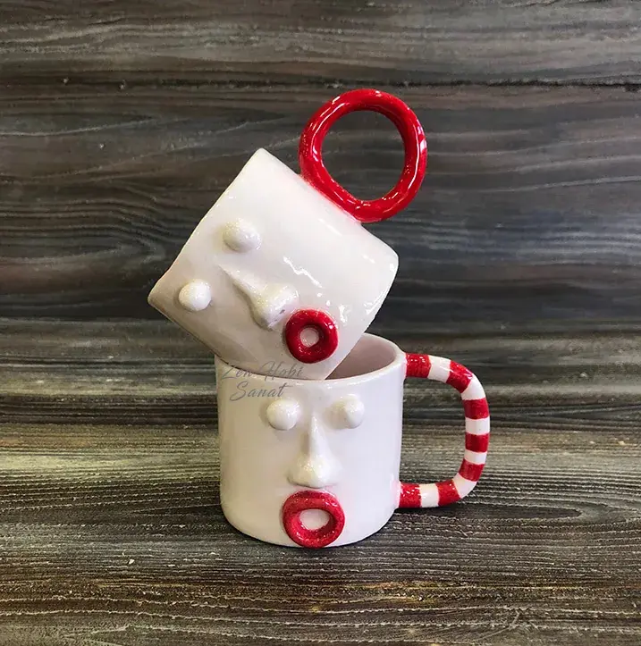
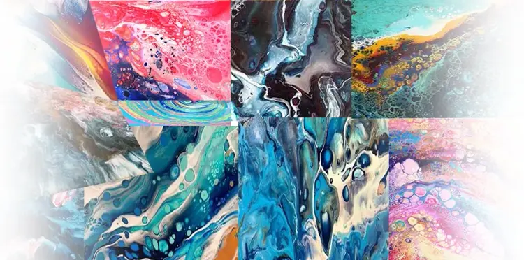
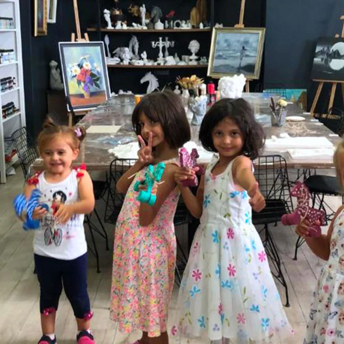
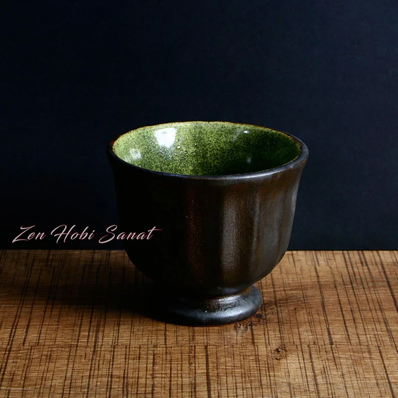
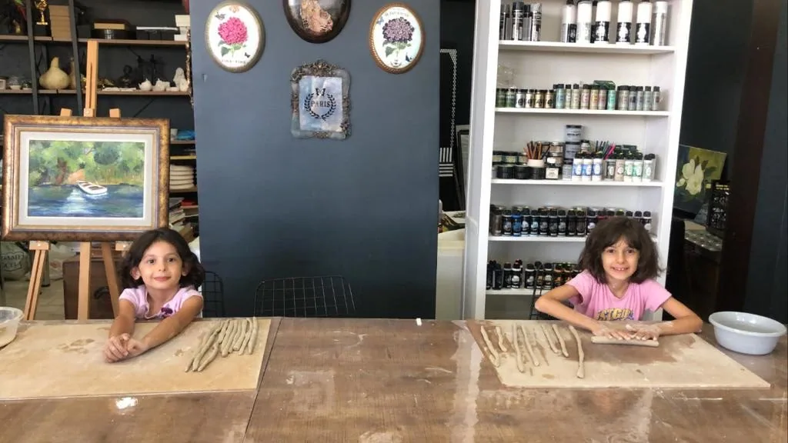
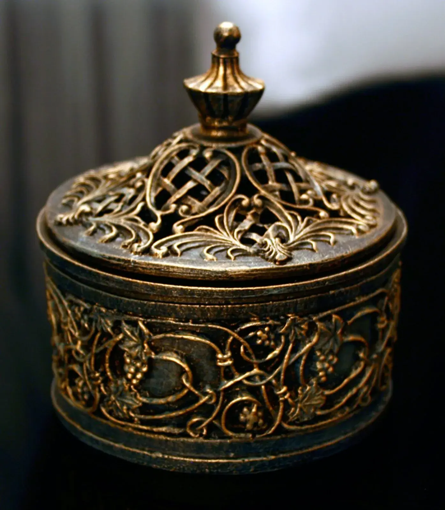
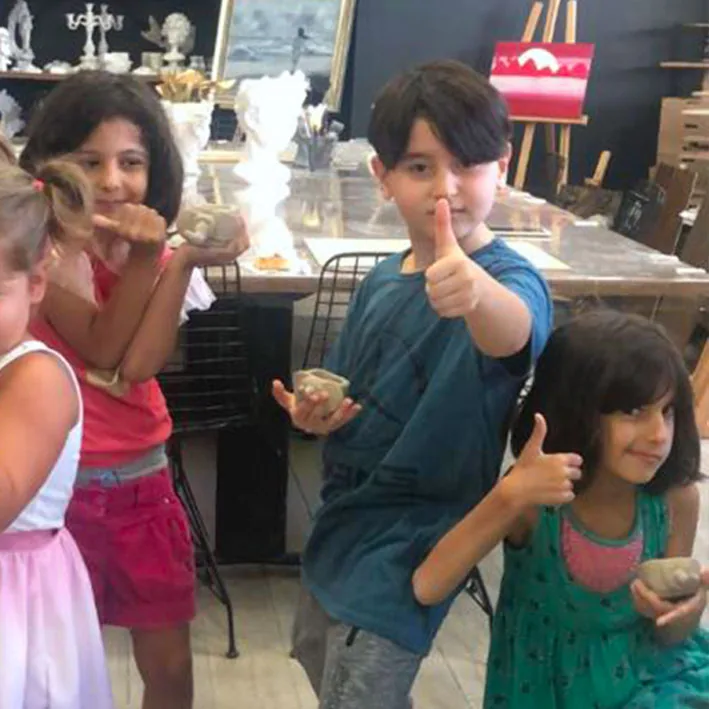

Seramik
Yeni Başlayanlar İçin Seramik: İlk Dersinizde Sizi Neler Bekliyor?
Çömlek tornasına ilk kez oturmak nasıl bir his? İlk seansta öğrenecekleriniz ve küçük ipuçları.

Atölyeden notlar, teknik ipuçları ve ilham veren yazılar. Sanat yolculuğunuza küçük rehberler.
Çömlek tornasına ilk kez oturmak nasıl bir his? İlk seansta öğrenecekleriniz ve küçük ipuçları.

Hiç fırça kullanmadan etkileyici tablolar: pouring art tekniğini ve neden bu kadar sevildiğini anlattık.

Sanat atölyeleri çocukların gelişimine nasıl katkı sağlıyor? Özgüvenden motor becerilere 5 başlık.

Seramik yapmanın zihinsel rahatlama üzerindeki etkisi ve neden bir 'mola' gibi hissettirdiği.

Klasik toplantılar yerine birlikte üreten bir takım: kurumsal sanat atölyelerinin gücü.

Sıradan objeleri kişisel sanat eserlerine dönüştürmenin yolları ve hediyelik fikirleri.

Resimden seramiğe sanat; çocukların duygusal, sosyal, bilişsel ve motor gelişimini nasıl destekliyor?
Güncel paylaşımlar için Instagram'dan bizi takip edin
Okumak güzel ama üretmek bambaşka. Size uygun atölyeyi seçip başlayın.